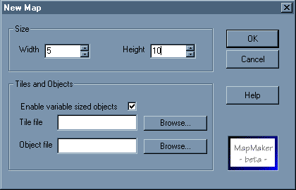

|
Creating a New Document
To create a new document, choose "New..." from the File menu, or click on the
New Document Icon.
The "New Map" Dialog

Width and Height
Specify the dimensions of the map here. You can change the size of the map at
any time using the Map Properties dialog.
Selecting Tile and Object Files
MapMaker allows you to use graphics, of different size than the tiles. These
images are called "objects", since they're used mostly to represent some sort
of physical object, like a coloumn, a radar, etc.
If you want to use objects, check the "Enable variable sized objects" field
(like showed above).
You can enter the name of the tile/ object file directly, or use the Browse button
to display a standard file dialog, allowing to select the correct file.
Setting the Transparent Color Index
By default, MapMaker does not display pixels with color index 0. If you're
using another color index for transparency, you can set it using the
Map Properties dialog.

|